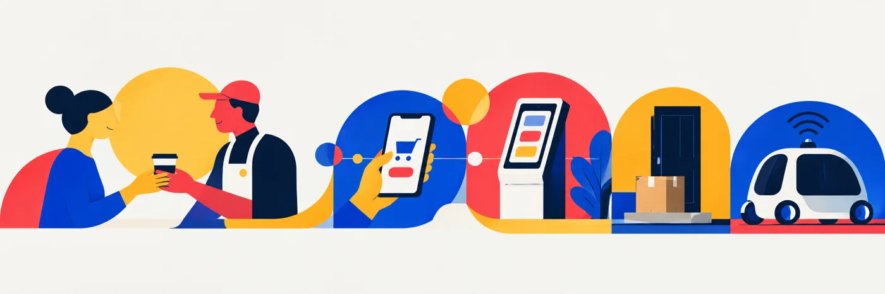

Understand people.
Researching user needs, expectations, behaviors, and the contexts that shape an experience.
Hi, I'm Brigitte — a service & experience designer and researcher connecting human needs, complex systems, and thoughtful strategy to create better experiences.
From emergency services to physical products, I look for the human questions hiding inside complex experiences.

Clarifying time-sensitive actions and information architecture in a safety app designed for moments when decisions matter.
Explore the case study ↗
Evaluating a security-screening interface through human factors, operational constraints, and research-led recommendations.
Explore the case study ↗
Investigating the gap between accessibility promises and real opening experiences in everyday food packaging.
Explore the case study ↗Human needs don't exist in isolation. Neither should design decisions.
Researching user needs, expectations, behaviors, and the contexts that shape an experience.
Looking beyond screens to the processes, touchpoints, stakeholders, and constraints around them.
Turning insights into accessible, workable improvements that serve people and organizations.
Research-informed essays exploring the role of design in the world around us.

When we design friction out of everyday experiences, are we also designing human connection out of them?
Read about the essay ↗Research-minded.
Systems-oriented.
Always curious.
My path to design runs through software engineering, product and project work, consulting, and human factors. I bring those perspectives together to examine not only how an experience works, but how it fits into people's lives.